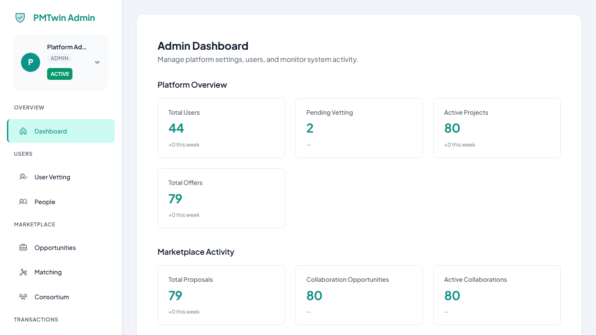
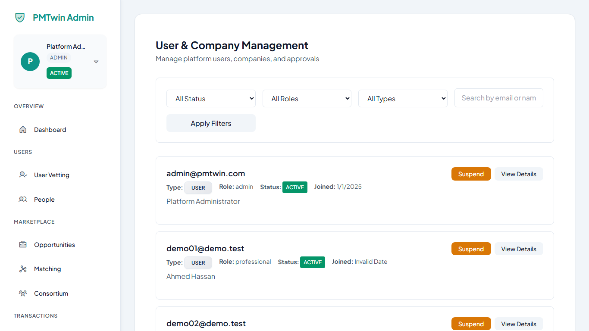
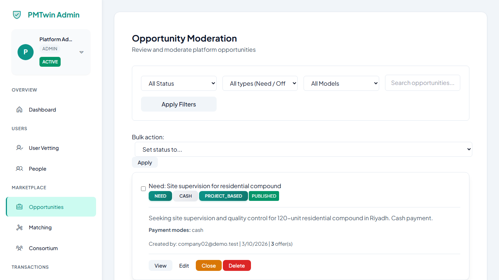
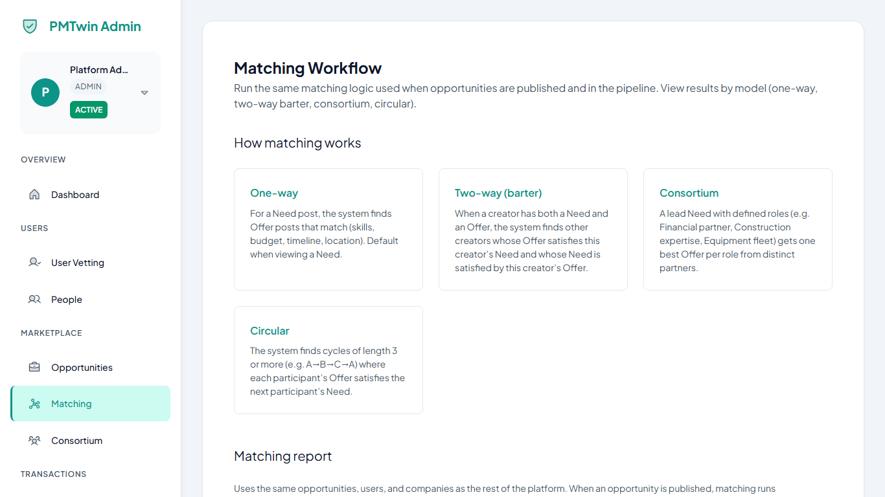
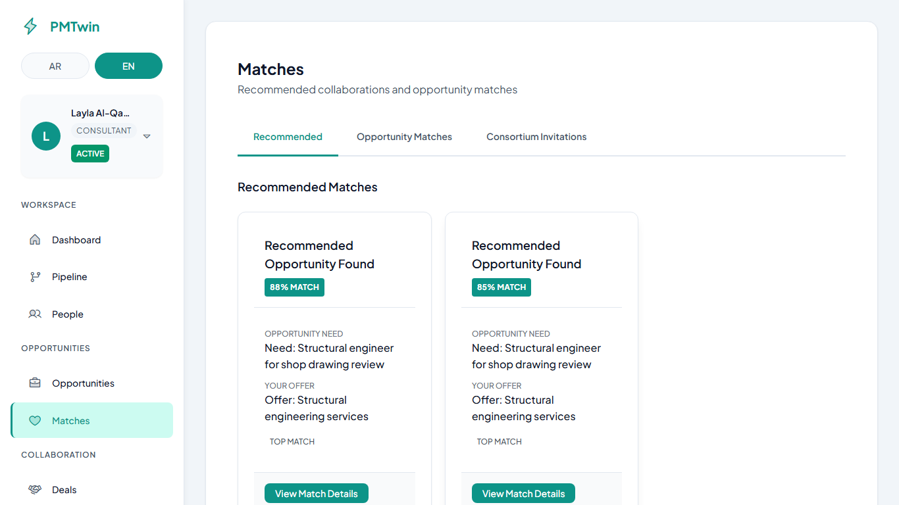
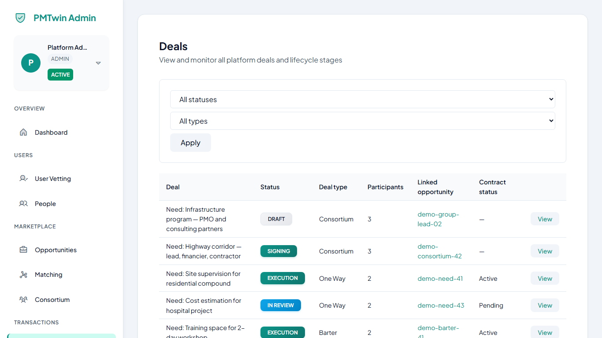
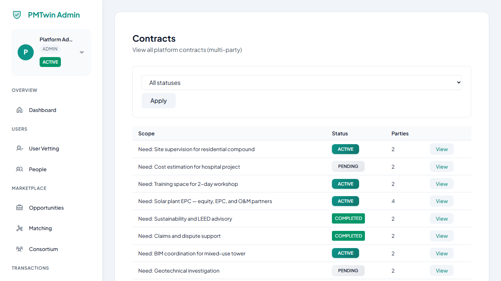
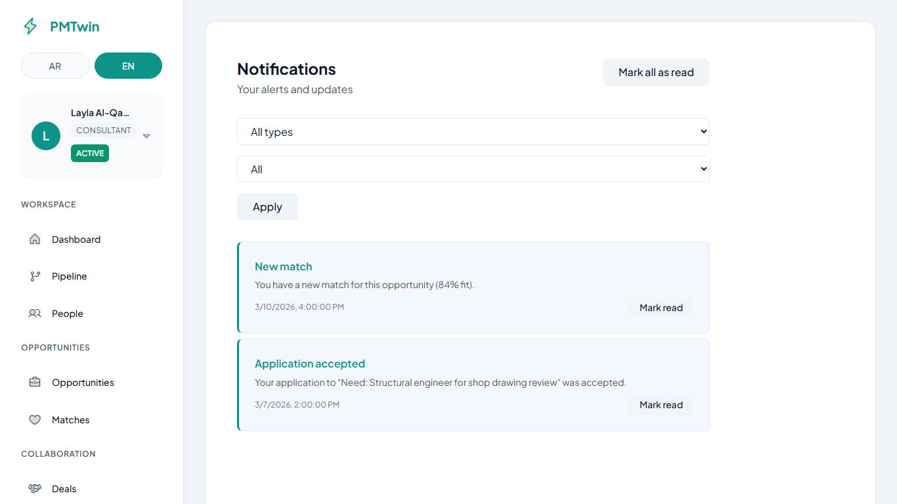

Your step-by-step guide For platform administrators
Welcome · A4 print & PDF · March 2026
1. Admin overview
What this page is about
This section explains what an administrator does on PMTwin. Admins help keep the platform organized, safe, and easy for members to use.
What you can do here
Understand how your role fits into day-to-day operations.
See which areas you will manage most often (people, posts, and follow-up).
👉 Admin Actions
👉 Admin Actions
Sign in with your administrator account.
Open the Admin area from the main navigation.
Skim the menu so you know where users, opportunities, matching, deals, and contracts live.
What happens next
You are ready to work through the admin screens in order, or jump to any topic from the table of contents.
Remember:
Admins manage users, opportunities, and platform activity. You review and guide what appears on the platform—without doing the work of a normal member account unless your organization asks you to.
2. Admin dashboard

Figure 1 — Admin dashboard showing system activity and key metrics
What you are seeing
The main admin home: summary cards and overview of platform activity.
Quick paths in the layout or menu to Users, Opportunities, Matching, Deals, and Contracts.
Headline numbers you can scan at the start of a review session.
What this page is about
The dashboard is your first stop after you open the Admin area. It gives a simple picture of what is happening on the platform.
What you can do here
View headline numbers and activity.
Spot items that may need attention.
Move quickly to other admin pages from the menu.
👉 Admin Actions
👉 Admin Actions
Open Admin, then Dashboard (or the home admin page your menu shows).
Review the key numbers at a glance.
Use the menu to go to Users, Opportunities, Matching, Matches, Deals, or Contracts when you need detail.
What happens next
You get a quick understanding of platform activity and can drill down wherever you need to.
Tips
Visit the dashboard at the start of your shift to set priorities.
3. User management

Figure 2 — User list for searching, opening profiles, and updating account status
What you are seeing
The searchable list of people and companies on the platform.
Row actions or links to open a user and review details.
Status or columns that help you find who needs approval or follow-up.
What this page is about
Here you see people and companies who use the platform. You can review new sign-ups, check profiles, and update account status when your process allows it.
What you can do here
View and search users.
Approve or reject accounts that are waiting for review.
Open a user to read or edit details.
Use a pending review or vetting view, if your menu includes it, to work through the queue faster.
👉 Admin Actions
👉 Admin Actions
Open Users (or User management) from the Admin menu.
Find the person or company you need, or open the pending list if available.
Select a user to open the detail view.
Choose Approve, Reject, or Edit, following your organization’s rules.
What happens next
The user’s status updates and their access changes right away, in line with your choice.
Tips
Approve only profiles that look complete and trustworthy.
If something is unclear, use your internal process before you approve.
4. Opportunities management

Figure 3 — Opportunities overview for reviewing and moderating member posts
What you are seeing
All member opportunities in one table or list, often with filters.
Ways to open a post and read the full description and details.
Actions to edit or remove content when it does not meet your guidelines.
What this page is about
Opportunities are posts where members describe what they need or what they offer. Admins make sure content stays clear, fair, and appropriate.
What you can do here
View all opportunities.
Open a post to read the full text.
Edit or remove content that does not meet your guidelines.
👉 Admin Actions
👉 Admin Actions
Open Opportunities from the Admin menu.
Select an opportunity to review.
Read the title, description, and any attached details.
If needed, edit the post or remove it using the actions on screen.
What happens next
The opportunity is updated or taken off the platform, and members see what your rules allow.
Tips
Focus on clarity, respect, and policy—small fixes often help more than removals.
5. Matching (admin view)

Figure 4 — Matching tools for reviewing suggestions and running matching when available
What you are seeing
The opportunity you are inspecting and the suggested pairings or scores.
Controls to refresh or run matching again, when your screen shows them.
Enough detail to judge whether suggestions look fair and useful for members.
What this page is about
This area helps you see how suggestions are built for an opportunity. The platform suggests matches on its own; you use this screen to review and, when your role allows, refresh or run matching from here.
What you can do here
View matching results tied to an opportunity.
Run matching again if your screen shows a Run or similar action.
👉 Admin Actions
👉 Admin Actions
Open Matching (or the admin matching page) from the menu.
Choose the opportunity you want to inspect.
Review the suggested pairings or list the screen shows.
If you see a control to run matching again, use it only when your process says so.
What happens next
You see suggested matches and can confirm they look reasonable for members. The platform suggests matches automatically; your job is to review when needed.
Tips
Clear, complete opportunities usually lead to clearer suggestions for everyone.
6. Matches monitoring

Figure 5 — Matches list for tracking suggested collaborations and their status
What you are seeing
A list of match rows with parties, scores or fit labels, and status.
A way to open one match to see participants and progress in full.
Filters or sorting, when shown, to focus on new or stuck items.
What this page is about
A match is a suggested collaboration between members. This page is for watching progress across many matches, not for running the matching tool itself.
What you can do here
View the list of matches.
See status and who is involved.
Open a match for more detail when you need to support someone.
👉 Admin Actions
👉 Admin Actions
Open Matches from the Admin menu.
Scan the list for names, dates, or status words your team cares about.
Click a match to open the full view.
Review participants and where the match stands.
What happens next
You understand how matches are moving and can answer questions or step in through your normal support channels.
Tips
Use this list together with the dashboard when you track busy periods.
7. Deals monitoring

Figure 6 — Deals overview for monitoring active collaborations and stages
What you are seeing
Deals listed with title, parties, and stage or status.
Links or buttons to open a deal and read scope and next steps.
Signals that help you spot deals that need a gentle nudge or support.
What this page is about
A deal is where members move from a match into real planning and delivery. Admins use this view to follow progress and help when something stalls.
What you can do here
View deals in one place.
See stage or status for each deal.
Open a deal to read scope, parties, and next steps.
👉 Admin Actions
👉 Admin Actions
Open Deals from the Admin menu.
Select a deal from the list.
Review the status and the people involved.
Use the information to support members or escalate through your team if needed.
What happens next
You can track deal progress and help keep work moving smoothly.
Tips
Pair this view with contracts when you check whether signing is complete.
8. Contracts monitoring

Figure 7 — Contracts list for checking agreements and signing progress
What you are seeing
Contracts with titles, parties, and current status.
Which step signing is on, when the screen shows it.
Paths to open a contract for the full text and history.
What this page is about
Contracts record the formal agreement between parties. Admins check that documents move through signing in an orderly way.
What you can do here
View contracts and their status.
See who still needs to sign, when the screen shows it.
👉 Admin Actions
👉 Admin Actions
Open Contracts from the Admin menu.
Select a contract.
Review the status and any signing steps shown.
What happens next
You know whether agreements are finished or still in progress, and you can guide members if your role includes that.
Tips
Always follow your organization’s legal and compliance rules when you discuss contracts with users.
9. Notifications & activity

Figure 8 — Notifications and recent updates relevant to your work
What you are seeing
A chronological list of alerts, mentions, or system messages.
Short summaries and links to the related user, opportunity, deal, or contract.
Filters or tabs, when available, to focus on unread or recent items.
What this page is about
Here you stay aware of what changed recently: alerts, messages, and a simple history of important events when your product includes it.
What you can do here
Read notifications meant for administrators.
Scan recent activity or an activity list, if your menu shows one.
Use filters or dates when the page offers them.
👉 Admin Actions
👉 Admin Actions
Open Notifications or Activity from the Admin menu (names may vary slightly).
Read new items first.
Follow any link on screen to the user, opportunity, deal, or contract it refers to.
What happens next
You catch up on changes without checking every screen by hand.
Tips
Make a short daily habit: dashboard, then notifications or activity, then deeper pages as needed.
A simple left-to-right map of where admin work fits: starting from Admin, then Users, Opportunities, Matches, Deals, and Contracts.
Each box matches a main area in the admin menu when you need to drill in.
Use this picture when you explain the journey to others or plan your own reviews.
What this page is about
This section ties the admin journey together. On PMTwin, work usually flows from people and their posts to suggestions, then to deals and contracts. As an admin, you often follow the same order when you review or support members.
What you can do here
See the big picture: users → opportunities → matches → deals → contracts.
Use the diagram at the top of this section as a map when you train others or explain your day.
👉 Admin Actions
👉 Admin Actions
Start with Users when accounts or trust are the issue.
Move to Opportunities when the question is about a post.
Check Matching and Matches when suggestions are in doubt.
Open Deals and Contracts when work or signing needs attention.
What happens next
You handle most admin tasks in a clear order, without jumping around unless the situation calls for it.
Tips
Keep this flow in mind: fixing an account issue early often prevents confusion later in deals and contracts.